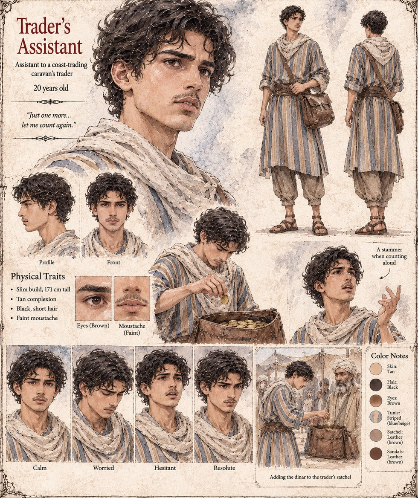

The Trader's Assistant
Assistant to a coast-trading caravan's trader · unnamed · drops the dinar into a satchel already heavy with a hundred others · twenty by the sheet
The assistant to a coast-trading caravan's trader, who drops the dinar into a satchel already heavy with a hundred others. It is Amina's one spend of the coin: Amina, with a lung-sickness in the flock, buys medicine from the coast-trading caravans without asking Malik, which is her right under the akad, and finds the coin back in her chest by the next dusk. Among a hundred ordinary coins it is, for the moment, one more.
A coin that leaves a caravan's satchel and is home again by dusk is a coin missing from that caravan's accounts, which is the shortfall the caravan's chief factor spends a week re-counting. The character list does not say outright that the two serve the same caravan. The manuscript gives the assistant no name, age or description.
The sheet draws him slim and young, with tan skin, short curly black hair, a faint moustache and brown eyes, in a blue-and-beige striped tunic with an off-white scarf over loose beige trousers, sandals and a brown leather satchel slung across his body; a margin note marks a stammer when counting aloud, and the sheet's pull-quote is Just one more... let me count again. Its expression panels run calm, worried, hesitant and resolute, and its last scene, Adding the dinar to the trader's satchel, shows him at an open satchel of gold beside an older bearded man in a white turban. The age of twenty, the stammer, the line and everything visual are the sheet's.